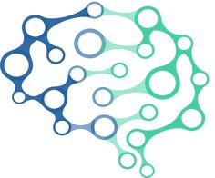
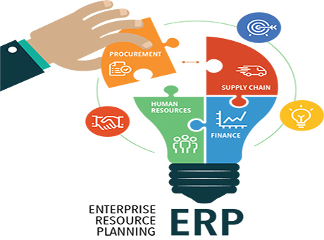

WEB
WHAT IS WEB DEVELOPMENT ?
Front-end development refers to constructing what a user sees when they load a web application the content, design and how you interact with it.
this is done with three codes HTML, CSS and JavaScript.
-
HTML, short for Hyper Text Markup Language, is a special code for marking up text in order to turn it into a web page.Every web page on the net is written in HTML, and it will form the backbone of any web application.
-
CSS, short for Cascading Style Sheets, is a code for setting style rules for the appearance of web pages. CSS handles the cosmetic side of the web.
-
Finally, JavaScript is a scripting language that is widely used to add functionality and interactivity to web pages.
-
Back-end development controls what goes on behind the scenes of a web application.
A back-end often uses a database to generate the front-end.
Back-end scripts are written in many different coding languages and frameworks, such as :
- PHP
- Ruby on Rails
- ASP.NET
- Perl
- Java
- Node.js
- Python
ANDROID

WHAT IS ANDROID?
-
Android is an open source and Linux-based Operating System for mobile devices such as smartphones and tablet computers.
Android was developed by the Open Handset Alliance, led by Google, and other companies.
-
Android offers a unified approach to application development for mobile devices which means developers need only develop for Android, and their applications should be able to run on different devices powered by Android.
-
The first beta version of the Android Software Development Kit (SDK) was released by Google in 2007 where as the first commercial version, Android 1.0, was released in September 2008.
Features of Android
Android is a powerful operating system competing with Apple 4GS and supports great features.
- Beautiful UI
- Android OS basic screen provides a beautiful user interface.
- Android OS basic screen provides a intuitive user interface.
- Connectivity
- GSM/EDGE
- IDEN
- LTE
- NFC
- WiMAX
- Media support
- H.263
- H.264
- MPEG-4 SP
- AMR
- Messaging
MACHINE LEARNING

WHAT IS MACHINE LEARNING?
Machine Learning is the science of getting computers to learn and act like humans do, and improve their learning over time in autonomous fashion, by feeding them data and information in the form of observations and real-world interactions.”
-
Machine learning is a very hot topic for many key reasons, and because it provides the ability to automatically obtain deep insights
-
Recognize unknown patterns, and create high performing predictive models from data, all without requiring explicit programming instructions.
-
There are many different types of machine learning algorithms, with hundreds published each day, and they are typically grouped by either learning style (i.e. supervised learning, unsupervised learning, semi-supervised learning)
-
By similarity in form or function (i.e. classification, regression, decision tree, clustering, deep learning, etc.). Regardless of learning style or function, all combinations of machine learning algorithms consist of the following:
- Evolet Technologies is continuously evolving and pushing the bar for our customers for developing an software testing as it requires a lot of creativity and innovativeness to make it stand out among the competitors
IOT

The Internet of Things (IoT) is the network of physical devices, vehicles, home appliances, and other items embedded with electronics, software, sensors, actuators, and connectivity which enables these things to connect and exchange data, creating opportunities for more direct integration of the physical world into computer-based systems, resulting in efficiency improvements, economic benefits, and reduced human exertions.
A growing portion of IoT devices are created for consumer use, including connected vehicles, home automation/smart home, wearable technology, connected health, and appliances with remote monitoring capabilities.
IoT devices are a part of the larger concept of home automation, which can include lighting, heating and air conditioning, media and security systems. Long term benefits could include energy savings by automatically ensuring lights and electronics are turned off.
.NET
.NET provides a simple object-oriented model to access most of the Windows application programming interfaces (APIs). It also provides mechanisms by which you can use the existing native code. In addition, it significantly extends the development platform by providing tools and technologies to develop Internet-based distributed applications.
The .NET platform is an integral component of the Microsoft Windows operating system for building and running next generation software applications and Web services. The .NET development framework provides a new and simplified model for programming and deploying applications on the Windows platform. It provides such advantages as multiplatform applications, automatic resource management, and simplification of application deployment. As security is an essential part of .NET, it provides security support, such as code authenticity check, resources access authorizations, declarative and imperative security, and cryptographic security methods for embedding into the users application.
IOS APPS
The IOS applications has redefined the concept of mobile app development paradigm all around the world and Evolet Technologies has provided innovative and world class iPhone applications.
Evolet Technologies is one of the top iOS (iPhone, iPad) Apps Development Company, backed by brilliant developers, who have collaborated innovative ideas in workflow of iOS app development With the help of flexible workflow and excellent knowledge base, we provide comprehensive mobile applications that can automate every kind of job related to business and personnel lifestyle.
ERP SOFTWARE

Enterprise Resource Planning, refers to creating a more efficient, leaner, better-automated and integrated business through sophisticated technology solutions.ERP software then, is a business management technology solution that businesses and manufacturers use to collect, store, manage, and communicate data.
ERP is a Complete Package with various modules involving various Business Processes of a Company right from Enquiry, Quotation, Sales, Purchase, Inventory, Production and Accounts.
Benifits of this service
- ERP Includes Master Data, Purchase, Sales, Inventory, Production, Financial Accounting (FA), Detailed MIS (Management Information Services) Reports etc. Modules and depending on the nature of your business, modules can be customized.
- Web Enabled Application which can run on a Local Server as well as on Internet/Intranet using Browser Environment.
- Improve compliance with strong traceability
- Reduces IT costs and delivers automated ERP upgrades
- Elevates productivity with anywhere access
DIGITAL MARKETING
Digital Marketing can be understood as a well-targeted, conversion-oriented, quantifiable, and interactive marketing of products or services by utilizing digital innovation to achieve the customers, and transform them into clients in a sustainable fashion. The whole concept and functionalities of Digital Marketing are more competent, effective, result-oriented and measurable, which make it very different from traditional marketing.
-
Communication is bidirectional in Digital Marketing as businesses can communicate with customers and customers can ask queries or make suggestions to businesses as well.
-
Medium of communication is more powerful and involves social media websites, chats, apps and Email.
-
Digital marketing campaigns can be developed quite rapidly and with digital tools, channelizing Digital Marketing campaigns is easier.
-
It is very effective for reaching global audiences.
- Digital Marketing lets you measure the effectiveness of a digital marketing campaign through analytics.
WORDPRESS

WHAT IS WORDPRESS?
WordPresis a free and open-source content management system (CMS) based on PHP and MySQL.[4] Features include a plugin architecture and a template system. It is most associated with blogging, but supports other types of web content including more traditional mailing lists and forums, media galleries, and online stores.
-
Wordpress an open source package that gives a simple, neat and edgy touch to any website.
-
It is popular for its responsive designs, customization with plugins and themes, flexibility, and because it has the largest share in the CMS market.
-
Evolet technologies development team masters in Wordpress website development. Our team understands the value of a website which is responsive, user-friendly and is a return investment for the client.
Did you know popular companies use the Wordpress platform? The Newyorker, Disney, Playstation, BBC America etc., all use this open source website platform. Wordpress is a platform that is effortless, easy to use, customizable and effective content management system and so a lot of business enterprises, clients and bloggers prefer Wordpress for an impactful, potential, and robust website. With Wordpress, one can create a responsive, functional and user- friendly website. Wordpress powered websites are secure, standard compliant, SEO friendly, host multiple media and reduce your total costs. Wordpress, unlike other platforms, lets you to effectively deal and manage your website content with an easy content management system. With the proper guidance, assistance and support your website can make the best use of this familiar system.